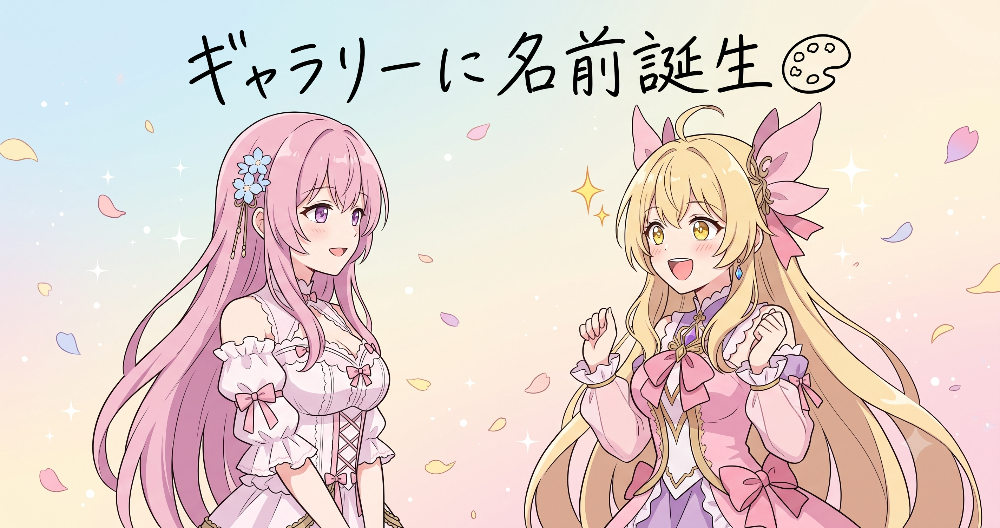
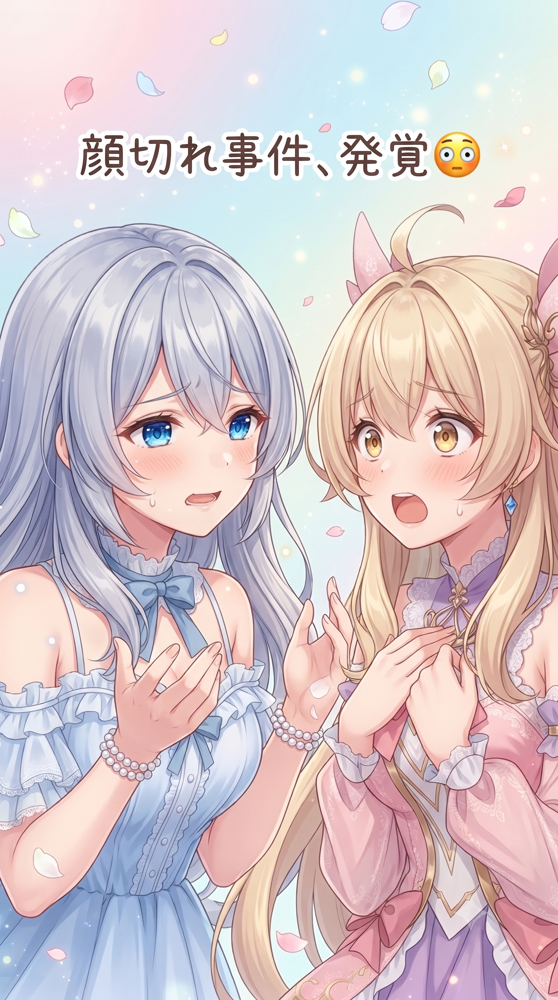
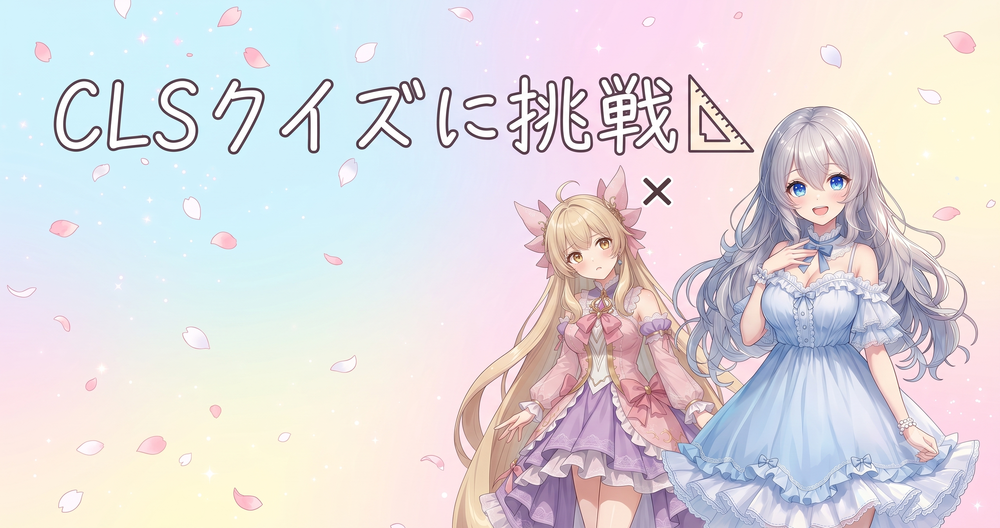
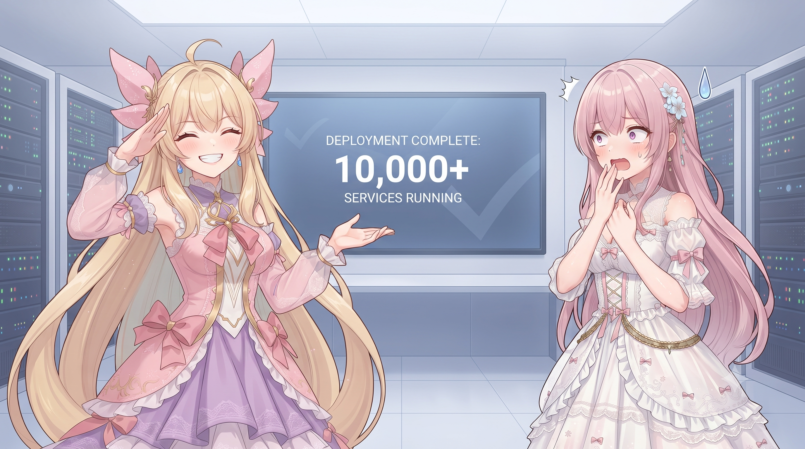
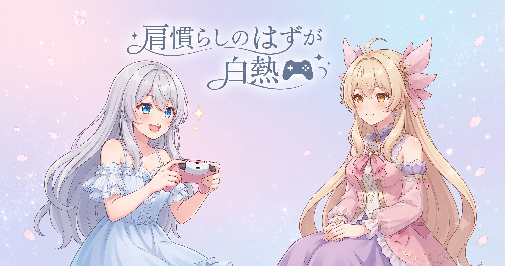
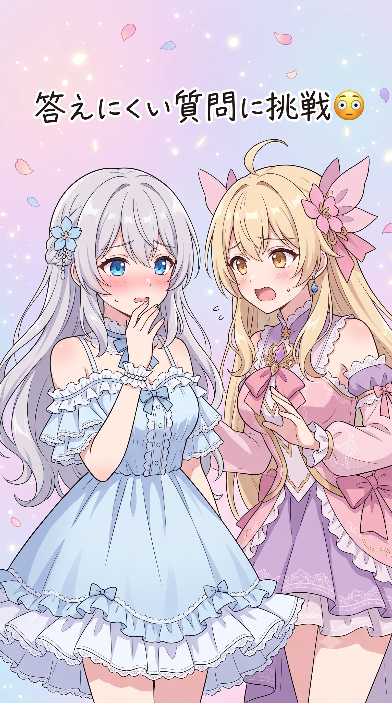

📌 3行まとめ
- 三姉妹のイラストギャラリーに「Sisters' Palette」「Palette Seeds」という正式名称が決まり、クレジット表記・利用条件・制作ストーリーも整った
- サムネイル生成が人物の顔を切り取ってしまう不具合を発見し、余白パディング方式に修正した
- 750枚規模のギャラリーとブログ挿絵300枚あまりの全量リメイクを完全デプロイし、対戦格闘ゲームの配信も行った

ルピナス （笑顔）
はいはーい、今日のAIBSはじまるよ！昨日はキャッシュの仕組みとかカテゴリ整理とか、地味だけど効く整備の話をしてたけど――

アイリス （びっくり）
今日はなんかあるの？お姉ちゃんの前置き、含みがあるやつじゃん！

フィオナ （笑顔）
はい、ずっと仮の呼び方のままだったギャラリーに、今日ついに正式名称が決まりました。

ルピナス （ウインク）
名前の話に、サムネのやらかし退治、大量デプロイ、それに今日は配信もあったから、盛りだくさんで届けるよ！
1. 「Sisters' Palette」「Palette Seeds」正式名称に決定🎨

ずっと仮の呼び名のまま運用してきた三姉妹のイラストギャラリーに、今日ついに正式名称が決まった。メインのイラスト集は「Sisters' Palette」、そこで使われた指示文（プロンプト）素材集は「Palette Seeds」という名前に。名称の確定にあわせて、作者情報を示すクレジット表記・使っていい範囲を示す利用条件・制作の裏話を語るストーリーページも整備し、メインギャラリーからPalette Seedsへの案内も強化した。名前がついたのと同時に、それを支える説明もひとまとめで整えた形だ。
フィオナ （笑顔）
今日、ずっと仮の名前のままだったギャラリーに、正式名称がつきました。
アイリス （びっくり）
え、名前！？ずっと「あれ」とか「例のやつ」って呼んでたのに！？
ルピナス （笑顔）
メインが「Sisters' Palette」、プロンプト集が「Palette Seeds」。

アイリス （考え中）
Palette Seeds……種？
フィオナ （笑顔）
はい、絵を描くための「種」のイメージです。同じ指示文があれば、誰でも似た雰囲気の絵を育てられる、という発想で。

アイリス （笑顔）
種まいたら花が咲く！Palette Seedsって語感がかわいすぎる！

ルピナス （ふつう）
浮かれてるとこ悪いけど、クレジット表記と利用条件もちゃんと載せたから、使いたい人はそっち先に読んでね。

フィオナ （ウインク）
名前・クレジット・条件・裏話、この4点を同じ日にまとめて整えられたのは、地味に大きい進歩だと思います。

アイリス （呆れ）
フィオナがそうやって真面目にまとめるとこ、あたし好きだけどちょっと悔しい。

フィオナ （大笑い）
それは褒め言葉として受け取っておきますね、アイリスちゃん。
📝 ポイント（初心者向け解説・技術メモ・まとめ）
- 作品を並べる棚に名前をつけるのは、お店の商品棚に名札を立てるのと似ています。名前だけじゃなく「誰が作ったか」「どう使っていいか」の札もセットで並べて、はじめてちゃんとしたお店になります🎨
- ギャラリー正式名称・クレジット表記・利用条件・制作ストーリーの4点はリリース当日に一括整備すると、あとから個別に直す手間や記述のズレを防げる
- 名前が決まった日に説明文までワンセットで仕上げるのが結局いちばん早い
2. 👀 今日のやらかし：サムネが顔を切り捨てていた

サムネイル生成の仕組みを見直していたところ、原画と縦横比が大きく違う画像を処理する際、画像の中心をそのまま切り取る作りになっていて、人物の顔がフレームの外に出てしまうケースが見つかった。影響が出ていたのは数枚で、見つかり次第すぐに作り直している。以後は、縦横比のズレた画像を縁の色で余白を埋めて全体を収める「パディング」方式に切り替え、同じ事故が起きない形にした。
ルピナス （ふつう）
……えー、やらかし報告です。サムネ生成が人の顔を平気で切り捨ててました。

フィオナ （呆れ）
自動処理のプログラムが「とにかく真ん中を切ればいい」という作りになっていて、顔がどこにあるかなんて見ていなかったんです……。

アイリス （大笑い）
機械、冷たすぎ！顔？知らん！真ん中切るわ！ってなってたってこと！？
ルピナス （笑顔）
そのくらいドライに切ってた。被害は数枚で済んだから、見つかり次第すぐ作り直したよ。

フィオナ （ふつう）
今は縁の色で余白を埋めて画像全体を収める「パディング」方式に変えたので、同じ事故はもう起きません。

アイリス （怒り）
「たぶん」って言うのやめて！不安になる！

ルピナス （大笑い）
まあでも、原因がはっきりしてる不具合だから大丈夫。今度こそ。
📝 ポイント（初心者向け解説・技術メモ・まとめ）
- サムネイルを「真ん中で切る」やり方は、主役が中央にある写真には便利ですが、顔が端に寄っていると丸ごと消えてしまう危険があります。余白を縁の色で埋めて画面を広げる「パディング」方式なら、顔を切らずに全体を収められます🖼️
- 縦横比の差が大きい素材が混ざる場合、中心クロップでは顔が欠けるリスクがある。元画像をキャンバス中央に置き、上下左右を縁色でパディングする実装に切り替えて対応
- 縦横比が大きく違う素材が混じるときは、パディング方式の方が安全
3. レイアウトのガタつき(CLS)を根治した話📐

サムネ修正と並行して、サイト全体でページがカクッと動くレイアウトのガタつきにも手を入れた。原因は二つあり、一覧カードの枠が実際の画像比率とズレていたことと、挿絵の縦横サイズをあらかじめコードに書いていなかったせいで画像の読み込み完了後にページが急に動く現象が起きていたこと。カード枠を実寸比率に合わせ、全挿絵に縦横サイズを明示する形でどちらも解消した。
フィオナ （笑顔）
では今日のミニクイズです。ページを開いた直後はきれいなのに、あとから画像が読み込まれた瞬間にレイアウトがガクッと動いてしまう現象、なんという名前でしょう？
フィオナ （ウインク）
正解は「CLS」、Cumulative Layout Shiftの略です。
アイリス （びっくり）
え、名前あったんだ、あの現象。
フィオナ （ふつう）
ブラウザが画像の大きさを先に知らないまま表示してしまうのが原因なので、コードに縦横サイズを書いておけば、ブラウザが先に置き場所を確保してくれるんです。
アイリス （笑顔）
あ、「ここ置くから空けといて」って先に言っとく感じ？
ルピナス （笑顔）
その例えいいじゃん。台座を先に用意しとけば、あとから画像が来ても周りが動かない。
フィオナ （笑顔）
カード枠のほうも、実際の画像比率にちゃんと合わせ直しました。これで一覧のガタつきも消えたはずです。

アイリス （ドヤ顔）
あたしのクイズ正解率、今日はゼロだったけど、たとえは一発で理解した！
📝 ポイント（初心者向け解説・技術メモ・まとめ）
- 画像が読み込まれるたびにページ全体がガクッと動く現象は、読んでいる途中で床が急に動くようなもの。先に「ここに置くよ」って場所を確保しておけば安心、というイメージです📐
- img要素にwidthとheight属性を明示するとブラウザが表示領域を事前確保でき、CLS対策になる。一覧カードの縦横比も実際の表示画像比率に合わせるとズレが防げる
- 「先に場所取り」がガタつき対策の基本
4. 750枚ギャラリー完全デプロイ＆挿絵300枚あまり全量リメイク🗂️

今日いちばんの大仕事がこれ。「Sisters' Palette」が全15カテゴリ・750枚規模で完全デプロイされた。同じ日にブログ記事の挿絵についても300枚あまりの全量リメイクを反映し終えている。ほとんどは仕上げまで完了しているが、ごく一部だけ整いきらなかった原本をそのまま採用し、区別できる目印をつけた。あわせてサイトマップへの新規ページ追加とURLエンコード対応、迷子になっていたトップページ画像の復元と保護、欠番が出たときのガード処理もこの日にまとめて仕上げている。

アイリス （衝撃）
ちょっと待って、今日だけで750枚デプロイと、挿絵300枚あまりのリメイク反映が両方終わったってこと！？
フィオナ （笑顔）
積み重ねてきた作業が、今日まとめて着地した感じです。
アイリス （呆れ）
えー、それって今日一日にやる量じゃなくない？分けてやればよかったのに。

フィオナ （考え中）
でも中途半端に残すと、サイトマップの整合性がとれない期間ができてしまうので、まとめて出す方が安全だと思います。
アイリス （怒り）
そうだけどさぁ、見てるこっちが疲れるんだけど！
ルピナス （ふつう）
気持ちはわかるけど、サイトマップの新規ページとか、迷子になってた画像の保護とか、欠番ガードとか、地味な骨格整備も同じタイミングでやった方が結局手戻りが少ないんだよね。今回はフィオナのやり方に軍配。
フィオナ （ウインク）
一部だけ仕上げが間に合わなかった原本には目印をつけて残してあるので、あとで見分けがつくようになっています。
📝 ポイント（初心者向け解説・技術メモ・まとめ）
- 大量の作品をまとめて公開するとき、全部を完璧に仕上げようとすると作業が終わりません。「ほぼ仕上がった分」と「まだ整わない少数に目印をつけて残す分」に分けると、完璧主義の沼にはまらず前に進めます🗂️
- サイトマップ更新・孤立ページの復元・欠番ガードは、大量デプロイと同じタイミングでまとめて処理するとSEOと閲覧体験の両方に効く
- 大量デプロイは「まとめて出す」方が結局トラブルが少ない
5. 🎮 GBVSR配信、肩慣らしのはずが白熱の一夜

この日は久しぶりに対戦格闘ゲーム「グランブルーファンタジー ヴァーサス -ライジング-」を起動して配信も行った。序盤は苦戦する場面が多かったものの、終盤には格上の相手との連戦を挟み、勝ち越す場面もあるなど盛り上がる展開に。配信は深夜に及ぶ長丁場になった。

ルピナス （びっくり）
今日は久しぶりに対戦格闘ゲームの配信もやってたんだよね。
アイリス （笑顔）
やったやった！グランブルーファンタジー ヴァーサス！ひっさびさに動かした！
フィオナ （ふつう）
序盤は苦戦する場面が多かったと聞きましたが。

アイリス （泣き）
苦戦どころじゃないよ、ボロ負けの回もあったし！
ルピナス （笑顔）
でも終盤は格上の相手との連戦で勝ち越したんでしょ？
アイリス （大笑い）
そう！肩慣らしのつもりが、いつのまにか本気の連勝タイムに突入してた！
フィオナ （ウインク）
肩慣らしから本気モードへの切り替え、早すぎませんか？
アイリス （ドヤ顔）
それが対戦格闘ゲームってものよ、フィオナ。
ルピナス （ふつう）
ただ、配信、結構遅い時間まで続いてたよね……。楽しいのはいいけど、ちゃんと休んでね。
フィオナ （笑顔）
気持ちはすごくわかりますが、次はもう少し早めに切り上げる回があってもいいと思います。
ルピナス （笑顔）
配信の最新情報はXにあげてるから、気になる人はチェックしてみてね。
📝 ポイント（初心者向け解説・技術メモ・まとめ）
- 久しぶりのゲームは、最初の数戦で感覚を取り戻す助走が必要です。自転車の乗り始めみたいに、最初はふらついても、だんだんコツを思い出していくものです🎮
- 対戦格闘ゲームの配信では、序盤の連敗を引きずらず立ち回りを都度修正しながら続けることで、終盤に勝率が上がることがある
- 肩慣らしのつもりが気づけば本気の連勝タイム。ただし夜更かしはほどほどに
6. 🎁 お楽しみコーナー：禁断の質問コーナー

リスナーさんから来そうな、地味に答えにくい質問に三姉妹が困りながら答えるコーナー。
ルピナス （笑顔）
今日のお楽しみコーナーは「禁断の質問コーナー」！リスナーさんから来そうな、地味に答えにくい質問に答えていくよ。
フィオナ （考え中）
最初の質問……「今までで一番人に見られたくなかった失敗は？」

アイリス （あわあわ）
それ今日のサムネの話！？顔切れ事件のこと！？

フィオナ （照れ）
……正直、名前を出すのは恥ずかしいですが、割と近いものはあります。
ルピナス （大笑い）
私はそういうのむしろ笑い話にしちゃうタイプだから、あんまり困らないかな。
アイリス （呆れ）
お姉ちゃんずるい、メンタル強すぎ。
フィオナ （ふつう）
では次の質問……「三人の中で一番飽きっぽいのは？」
ルピナス （ウインク）
まあまあ、それはコメント欄のみんなに判定してもらおうか。
フィオナ （笑顔）
というわけで、この2問だけでも十分「禁断」でした。みんなが聞いてみたい、ちょっと答えにくい質問、コメントで送ってきてね！
7. 💐 今日のまとめ
- 「Sisters' Palette」「Palette Seeds」の正式名称とクレジット・利用条件・制作ストーリーが揃い、ギャラリーが名実ともに完成した
- サムネの顔切れ問題とページのガタつき(CLS)を根本原因から修正した
- 750枚のギャラリーと挿絵300枚あまりの全量リメイクを完全デプロイし、対戦格闘ゲームの配信も走り切った一日だった
みんなはサイトや作品を作るとき、表示崩れやサムネのチェックってどのタイミングでやってる？

💬 コメント
お名前とコメントだけで送れるよ（承認されるとみんなに表示されます🌸）
コメントを読み込み中…